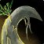
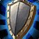
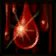

01一场里关键技能交在哪
一整场 +22（25:04 限时）里，法术反射、剑在人在、集结呐喊和冲锋解定身分别用在了哪里。
02先学这四招
每把都要做到的四个按键。
猛击落地后全团吃 8 秒自然伤害。反射顶住前 5 秒；科兹齐特这时如果把光芒箭点到你，会被直接反射回去。
被击退落地先冲锋回首领；4 秒后血棘之根定住你，再冲锋一次，冷酷追杀直接移除定身。
光明之火是全团 6 秒的神圣灼烧。光束一出手就开反射，6 秒里 5 秒都吃 20% 减伤。每一轮都开，反射的冷却正好跟得上。
先嘲讽首领让棘刺点你，读条开始后开反射。棘刺的伤害、击退和 10 秒流血全部弹回首领，一下 123 万。
03法术反射：这个本的主减伤
它有两种用法：大多数时候当 20% 魔法减伤用，少数几个单体法术能整个反射回去。
 当减伤用：顶全团魔法伤害
当减伤用：顶全团魔法伤害
反射期间受到的魔法伤害降低 20%，持续 5 秒，就算没有东西可反也照样减伤。这个本绝大多数全团伤害都是神圣或自然，所以反射基本是转好就有活干。
 喷涌之花
喷涌之花
小怪 · 6 秒神圣读条末尾 基岩涌动
基岩涌动
议会 · 8 秒自然猛击落地- 唤棘者咆哮
伊库兹 · 6 秒自然读条末尾  光明之火
光明之火
鲁伊亚 · 6 秒神圣光束射出 喷毒
喷毒
薯身蟾主母 · 自然读条末尾 渗流木质
渗流木质
兹欧凯特 · 每 3 秒神圣转好就开
真反射：把单体法术弹回去
反射会弹回第一个对你施放的法术。这个本里能弹的单体法术：
- 棘刺
兹欧凯特 · 先嘲讽首领123 万 - 光芒箭
科兹齐特 · 点到你时74 万  种子射击
种子射击
多叶林莽爬行者 · 鲁伊亚门口77 万
反射弹掉一个法术就结束，减伤也跟着没了。所以在议会，反射优先给基岩涌动，光芒箭只是顺带。
兹欧凯特：嘲讽 → 反射棘刺
棘刺读条 3 秒，点一名玩家：19 万神圣伤害、击退，再加 10 秒流血。读条前 1–2 秒嘲讽首领，读条一开始就开反射（5 秒覆盖整个读条）。反射成功后你不掉血、不被击退，流血挂在首领身上。棘刺约 50 秒一次，反射约 23 秒一次：中间那次反射给渗流木质，留一次给棘刺。开打前先跟坦克说一声。
04按路线逐段
每一行：看到什么 → 按什么 → 为什么。伤害类型标出来了，神圣自然都是反射能减的魔法伤害。
开场 → 莱克希议会
TRASH · 鞭笞者大波
莱克希议会
BOSS 1 · 莱克希 / 科兹齐特 / 梅提克莱克希 → 伊库兹
TRASH · 短波圣光猎手伊库兹
BOSS 2伊库兹 → 鲁伊亚
TRASH · 脊盾甲虫 / 林莽爬行者护光者鲁伊亚
BOSS 3
防御姿态 减伤鲁伊亚 → 兹欧凯特
TRASH · 薯身蟾主母 / 鞭笞者兹欧凯特
BOSS 405工具箱
这个本里用得上的非输出技能，各自交给什么。
法术反射 反射 / 减伤约 23 秒
5 秒魔法伤害 −20%，弹回第一个对你施放的法术。
交给 每一个全团魔法伤害、光芒箭、棘刺
剑在人在 减伤1 分 48 秒
8 秒受到的所有伤害 −30%，物理魔法都减。
交给 荆棘之刃、凶残痛击、光狂疯乱阶段
冲锋 位移 · 解定身2 次充能
冷酷追杀：冲锋移除所有移动限制效果（30 秒一次）。
交给 血棘之根、践踏和拔根而起的击退
防御姿态 减伤
受到伤害 −15%，自己造成的伤害 −10%。
交给 粉碎打击，打完切回战斗姿态
胜利在望 自疗25 秒
攻击并回复 30% 最大生命。
交给 凶残痛击、基岩涌动后的低血
集结呐喊 团队3 分钟
全队当前和最大生命值 +10%，10 秒。
交给 开场大波、咆哮 + 光狂疯乱、兹欧凯特末段
嘲讽 配合反射8 秒
强制目标攻击你。
只用在 兹欧凯特的棘刺 前
震荡波 / 风暴之锤 控制
前方群体昏迷 / 单体昏迷。
交给 光诞鞭笞者、漏断的读条
06常中的减益
身上会挂什么、自己能做什么、要找谁。

粉碎07天赋
+22 夺目谷武器战配置，英雄天赋屠戮者。在游戏天赋界面点「导入」，粘贴下面这串。
CcEAAAAAAAAAAAAAAAAAAAAAAgZmZmFzYmZGAAAghphxwMbmZmZGzMmZAAAAAMWmZgJMW2GYBMgZYCMD2AzMWGGMLzsNAzMAYGGA冷酷追杀
冲锋移除所有移动限制，30 秒一次。伊库兹的血棘之根靠它。
干练反射
法术反射、剑在人在、风暴之锤、拳击冷却 −10%。
再度冲锋
冲锋 2 次充能：回位一次，解定身一次。
防御姿态
粉碎打击时切换。
胜利在望
随时可用的 30% 自疗。
痛尽甘来
受到伤害时回 2% 生命，10 秒一次。
战场急救
受到治疗 +3%，自我治疗再 +10%。
腾跃步伐
英勇飞跃冷却 −15 秒，落地加速。